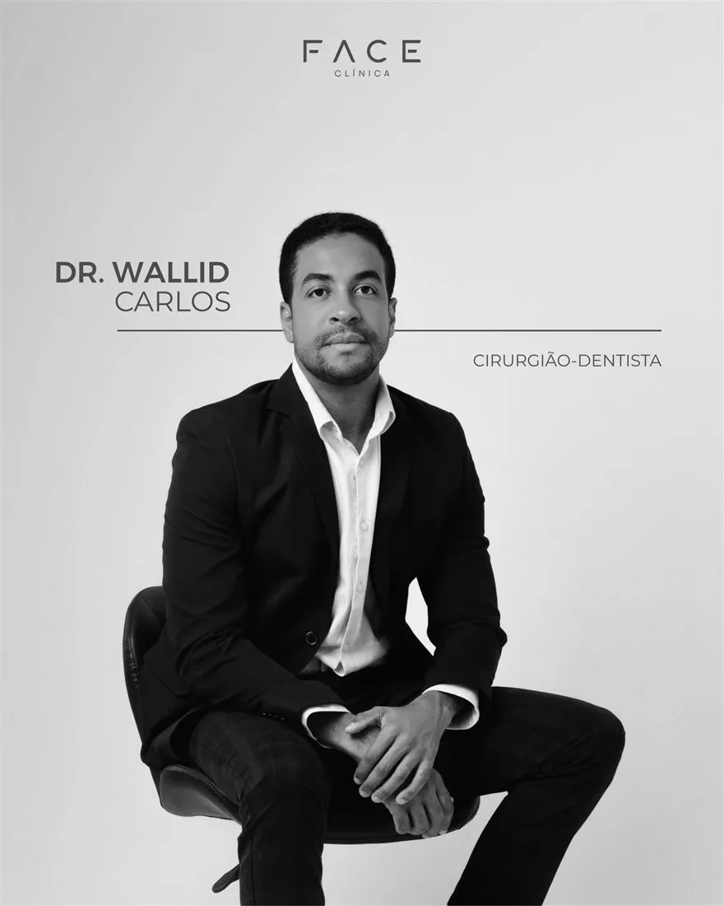

Dr. Wallid Carlos
Sócio · CRO-PE 13917
Odontologia Estética e Reabilitação Oral
Com um olhar atento à estética e à precisão, o Dr. Wallid transforma cada sorriso de forma única, unindo arte e técnica avançada para realçar a beleza natural do paciente.
Ministra a Mentoria Estratifique, formação em facetas em resina composta para cirurgiões-dentistas. Atende em Arcoverde e Recife.